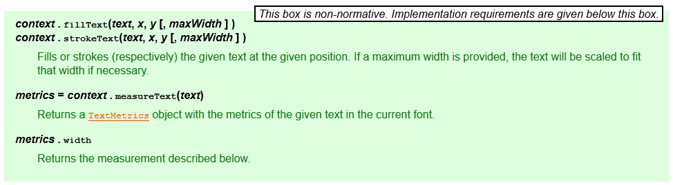
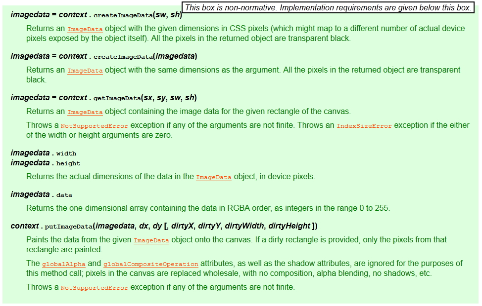

Overview
Overview
- Canvas is a 2D drawing API recently added to HTML and supported by most browsers.
- Draw anything you want directly in the web browser without the use of plugins like Flash or Java.
- screenshots give you just a taste of what is possible with Canvas

What is Canvas?
- Canvas is a 2D drawing API.
- Browser gives you a rectanglar area on the screen that you can draw into.
- You can draw lines, shapes, images, text; pretty much anything you want.
<html>
<body>
<canvas width='300' height='200' id='canvas'></canvas>
<script>
var canvas = document.getElementById('canvas');
var c = canvas.getContext('2d');
c.fillStyle = 'red';
c.fillRect(25,25,200,150);
</script>
</body>
</html>
What is Canvas?
-
Important to understand that Canvas is for drawing pixels.
-
Doesn't have shapes or vectors.
-
There are no objects to attach event handlers to.
-
Just draws pixels to the screen.
Which? What? When?
-
For charts, graphs, dynamic diagrams, and of course video games, Canvas is a great choice.
So where does it fit in with the rest of the web?
-
There are four ways to draw things on the web: Canvas, SVG, CSS, and direct DOM
-
SVG:
SVG is a vector API that draws shapes. Each shape has an object that you can attach event handlers to. -
CSS:
CSS is really about styling DOM elements. CSS will only affect the DOM area. -
DOM:
DOM or Document Object Model, defines an object for everything on the screen.
Browser Support
http://caniuse.com/#feat=canvas

Basic Drawing
Simple Drawing
Canvas is a simple 2D API.
- Get a reference to a graphics context.
- Set some properties, then draw something.
Simple Drawing
Canvas is a simple 2D API.
- Get a reference to a graphics context.
- Set some properties, then draw something.
Paths
Canvas only directly supports the rectangle shape. To draw any other shape you must draw it yourself using a path.
- Paths are shapes created by a bunch of straight or curved line segments.
- In Canvas you must first define a path with beginPath().
- After then you can fill it, stroke it, or use it as a clip
- Define each line segment with functions like moveTo(), lineTo(), and bezierCurveTo().
Coordinate System
- Canvas has the origin in the upper left corner with the y axis going down.
- If you want a different origin you can do that with transforms

Images
- Canvas can draw images with the drawImage function.
- Draw the image directly to the screen at normal scale, or stretch and slice.
Images - spec
This method can be invoked with three different sets of arguments:
drawImage(image, dx, dy)drawImage(image, dx, dy, dw, dh)drawImage(image, sx, sy, sw, sh, dx, dy, dw, dh)
Each of those three can take either an
HTMLImageElement, an HTMLCanvasElement, or
an HTMLVideoElement for the image
argument.
- context .
drawImage(image, dx, dy) - context .
drawImage(image, dx, dy, dw, dh) - context .
drawImage(image, sx, sy, sw, sh, dx, dy, dw, dh) -
Draws the given image onto the canvas. The arguments are interpreted as follows:

If the first argument isn't an
img,canvas, orvideoelement, throws aTypeMismatchErrorexception. If the image has no image data, throws anInvalidStateErrorexception. If the one of the source rectangle dimensions is zero, throws anIndexSizeErrorexception. If the image isn't yet fully decoded, then nothing is drawn.
Text
- Canvas can draw text as well. The font attribute is the same as its CSS equivalent, so you can set the styleg, size, and font family.
- fillText(string,x,y) function draws using baseline of the text, not the top.
Text - spec
http://dev.w3.org/html5/2dcontext/#dom-context-2d-filltext
measureText must return the new TextMetrics object. TextMetrics have only width value.
Gradients
- Canvas can also fill shapes with gradients.
Gradients
- An important thing to notice here is that gradient is painted in the coordinate system.
Gradients - spec
http://dev.w3.org/html5/2dcontext/#dom-context-2d-createlineargradient
Making Charts
Making Charts
1. Create A New Page
- page above contains a canvas and script element.
-
datavariable in the script tag is a set of data points that we will draw in the bar chart.
<html>
<body>
<canvas width="500" height="500" id="canvas-chart"></canvas>
<script>
var data = [ 16, 68, 20, 30, 54 ];
</script>
</body>
</html>
Making Charts
1. Create A New Page
- canvas and fill the background with gray.
Making Charts
1. Create A New Page
- canvas and fill the background with gray.
Making Charts
2. Add Data
Making Charts
2. Add Data - rect spec
Making Charts
2. Add Data
Making Charts
3. Add Line and Label
Making Charts
3. Add Line and Label - fixed position and color
Making Charts
Piechart
Paths-spec
Paths-spec
Paths-spec
Paths-spec
Paths-spec
ArcTo Drawing
Arc Drawing
Advanced Drawing and Events
ImageData
getImageData / putImageData
cross-origin problem
- filefox : netscape.security.PrivilegeManager.enablePrivilege("UniversalBrowserRead");
-
chorme : --allow-file-access-from-files
var canvas = document.getElementById('canvas-ImageData1');
var ctx = canvas.getContext('2d');
var objImageData;
var img = new Image();
img.onload = function() {
ctx.canvas.width = img.width;
ctx.canvas.height = img.height;
ctx.drawImage( img, 0, 0 );
try {
try {
objImageData = ctx.getImageData(0, 0, img.width, img.height)
} catch (e) {
netscape.security.PrivilegeManager.enablePrivilege("UniversalBrowserRead");
objImageData = ctx.getImageData(0, 0, img.width, img.height)
}
} catch (e) {
throw new Error("unable to access image data: " + e)
}
}
img.src = "./images/html5icon2.png";
alert("Pixel an (0,0): rgba("+objImageData.data[4]+", "+objImageData.data[5]+", "+objImageData.data[6]+","+objImageData.data[6]+")");
ImageData-spec
Image Pattern
- Canvas is supported pattern using createPattern method.
- You can control how the pattern is repeated the same as you would with background images in CSS.
Image Pattern-spec
http://dev.w3.org/html5/2dcontext/#dom-context-2d-createpattern
Opacity
- The Canvas API lets you control the opacity of any drawing function with the globalAlpha property.
- The globalAlpha property must be a value between 0 and 1 or else it will be ignored (or may unexpected behavior on some platforms).
Opacity-spec
http://dev.w3.org/html5/2dcontext/#dom-context-2d-globalalpha
Transforms
- Like many 2D APIs, Canvas has support for the standard translate, rotate, and scale transforms.
Transforms-spec
http://dev.w3.org/html5/2dcontext/#dom-context-2d-translate
State
- The context2D object represents the current drawing state.
- The state includes the current transform, the fill and stroke colors, the current font, and a few other variables.
- You can save this state by pushing it onto a stack using the save() function. restore to the previous state with the restore() function.
function testDraw(id, num) {
var ctx = $("#"+id+" > canvas")[0].getContext('2d');
switch( num ) {
case '1':
ctx.fillStyle = '#FA6900';
ctx.shadowOffsetX = 5;
ctx.shadowOffsetY = 5;
ctx.shadowBlur = 4;
ctx.shadowColor = 'rgba(204, 204, 204, 0.5)';
ctx.fillRect(10,10,15,150);
break;
case '2':
ctx.fillStyle = '#E0E4CD';
ctx.shadowOffsetX = 10;
ctx.shadowOffsetY = 10;
ctx.shadowBlur = 4;
ctx.shadowColor = 'rgba(204, 204, 204, 0.5)';
ctx.fillRect(40,10,30,150);
break;
case '3':
ctx.fillStyle = '#A7DBD7';
ctx.shadowOffsetX = 15;
ctx.shadowOffsetY = 15;
ctx.shadowBlur = 4;
ctx.shadowColor = 'rgba(204, 204, 204, 0.5)';
ctx.fillRect(100,10,45,150);
break;
case '4':
ctx.beginPath();
ctx.arc(195, 85, 22, 0, Math.PI*2, true);
ctx.closePath();
ctx.fill();
break;
case '5':
ctx.beginPath();
ctx.arc(270, 85, 15, 0, Math.PI*2, true);
ctx.closePath();
ctx.fill();
break;
case '6':
ctx.beginPath();
ctx.arc(315, 85, 8, 0, Math.PI*2, true);
ctx.closePath();
ctx.fill();
break;
default:
//ctx.clearRect(0, 0, 350, 180);
ctx.fillStyle = 'white';
ctx.fillRect(0,0,350,180);
break;
}
}
function saveStateTest(id) {
var ctx = $("#"+id+" > canvas")[0].getContext('2d');
ctx.save();
}
function restoreStateTest(id) {
var ctx = $("#"+id+" > canvas")[0].getContext('2d');
ctx.restore();
}
function initStateDemo() {
var ctx = $("#statedemo > canvas")[0].getContext('2d');
ctx.fillStyle = 'white';
ctx.fillRect(0,0,350,180);
}
initStateDemo();
State-spec
Clipping
- Draw just part of a shape. You can do this with the clip function.
- Drawing will only happen
insideof the clip. Anything you drawoutsideof the clip will not be shown on screen.
Clipping-spec
Event
- Canvas doesn't define any new events.
- The Canvas just looks like a rectangular area of pixels to the rest of the browser. The browser doesn't know about any shapes you've drawn.
- Events to the canvas as a whole.
- If you want to do special things then that Calculating and converting the raw mouse event.
- Canvas has an API to help:
isPointInPath.This function will tell you if a given coordinate is inside of the current path.
c.beginPath();
c.arc(
100,100, 40, //40 pix radius circle at 100,100
0,Math.PI*2, //0 to 360 degrees for a full circle
);
c.closePath();
var a = c.isPointInPath(80,0); // returns true
var b = c.isPointInPath(200,100); // returns falseEvent-spec
http://dev.w3.org/html5/2dcontext/#hit-region
- Canvas v5 API additions.
- http://www.w3.org/wiki/Canvas_hit_testing
Event
- Hit test (addHitRegion)
Event-spec
http://dev.w3.org/html5/2dcontext/#dom-context-2d-ispointinpath
Event
- Hit test (isPointInPath)
function hitTest() {
var canvas = document.getElementById("hittestdemo2");
var ctx = canvas.getContext('2d');
ctx.fillStyle = 'white';
ctx.fillRect(0,0,300,200);
ctx.beginPath();
ctx.fillStyle = 'blue';
ctx.rect(100,50,100,100);
ctx.fill();
$("#hittestdemo2")[0].onclick = function (e) {
var x, y;
x = e.offsetX;
y = e.offsetY;
if ( ctx.isPointInPath(x, y) ) {
alert( "hit event ("+x+","+y+")" );
}
}
$("#hittestdemo2")[0].onmousemove = function (e) {
var x, y;
x = e.offsetX;
y = e.offsetY;
$("#hitpos").text("("+x+","+y+")");
//console.log( x+','+y);
}
}
hitTest();
Event
- Using graph library
function aminoTest() {
var amino = new Amino();
var can = amino.addCanvas('hittestdemo3');
can.setBackground("white");
var all = new Group();
can.add(all);
//add circle w/ event listener
var cir = new Circle();
cir.set(300,150,30);
cir.setFill("red");
all.add(cir);
can.onPress(cir,function() {
if(cir.getFill() == "red") {
cir.setFill("blue");
var anim = new PropAnim(trans,"translateX",-250,100,1);
amino.addAnim(anim);
anim.start();
//anim.setTween(EASE_OUT);
} else {
cir.setFill("red");
var anim = new PropAnim(trans,"rotate",0,360,0.5);
//anim.setTween(EASE_OUT_OVER);
amino.addAnim(anim);
anim.start();
}
});
//add text inside trasnform
var text = new Text()
.setText("Amino!")
.setFill("#50c0e0")
.setY(100)
.setFont("bold 50pt Arial")
;
var trans = new Transform(text);
trans.setTranslateX(100);
all.add(trans);
};
aminoTest();
reference - http://goamino.org/
Animation
Animation
setInterval
- Animation is that it's just drawing the same thing over and over again.
- If you want to animate something, just wait a few milleseconds and draw it again.
- The easiest way to do this is with the JavaScript setInterval() function. It will call your drawing function every N msec.
- setInterval is not efficient
- setInterval will always draw at the same speed, not the page is currently in the foreground
- means more CPU, GPU, and memory usage, leading to shorter battery life.
Animation
requestAnimationFrame
- requestAnimationFrame was created to make animation smooth and power efficient.
- It also can make the animation smoother by locking it to the 60 frames per second
- At some time in the future the browser will call your drawing function when the browser is ready. This gives the browser complete control over drawing so it can
lower the framerate when needed. - requestAnimationFrame is becoming a standard, but most browser only support their own API.
- Chrome - webkitRequestAnimationFrame
- Mozilla - mozRequestAnimationFrame
- etc ...
ref - http://www.w3.org/TR/animation-timing/#requestAnimationFrame
Animation
requestAnimationFrame
Paul Irish's shim script.This just maps the different variations to a new function: requestAnimFrame.
ref - http://paulirish.com/2011/requestanimationframe-for-smart-animating
// shim layer with setTimeout fallback
window.requestAnimFrame = (function(){
return window.requestAnimationFrame ||
window.webkitRequestAnimationFrame ||
window.mozRequestAnimationFrame ||
window.oRequestAnimationFrame ||
window.msRequestAnimationFrame ||
function( callback ){
window.setTimeout(callback, 1000 / 60);
};
})();
// usage:
// instead of setInterval(render, 16) ....
(function animloop(){
requestAnimFrame(animloop);
render();
})();
// place the rAF *before* the render() to assure as close to
// 60fps with the setTimeout fallback. |
Simple Animation
window.requestAnimFrame = (function(){
return window.requestAnimationFrame ||
window.webkitRequestAnimationFrame ||
window.mozRequestAnimationFrame ||
window.oRequestAnimationFrame ||
window.msRequestAnimationFrame ||
function( callback ){
window.setTimeout(callback, 1000 / 60);
};
})();
var x = 0;
function drawIt() {
window.requestAnimFrame(drawIt);
var canvas = document.getElementById('anidemo1');
var c = canvas.getContext('2d');
c.clearRect(0,0,canvas.width,canvas.height);
c.fillStyle = 'white';
c.fillRect(0,0,350,200);
c.fillStyle = "red";
c.fillRect(x,100,200,100);
x+=5;
}
function simpleAniStart() {
window.requestAnimFrame(drawIt);
}
Particle Simulator
window.requestAnimFrame = (function(){
return window.requestAnimationFrame ||
window.webkitRequestAnimationFrame ||
window.mozRequestAnimationFrame ||
window.oRequestAnimationFrame ||
window.msRequestAnimationFrame ||
function( callback ){
window.setTimeout(callback, 1000 / 60);
};
})();
var canvas = document.getElementById('canvas');
var particles = [];
var tick = 0;
function loop() {
window.requestAnimFrame(loop);
// implement the classic particle simulator algorithm
createParticles();
updateParticles();
killParticles();
drawParticles();
}
window.requestAnimFrame(loop);
Particle Simulator
createParticles
- executes every 10th tick.
- less than 100 particles.
function createParticles() {
//check on every 10th tick check
if(tick % 10 == 0) {
if(particles.length < 100) {
particles.push({
x: Math.random()*canvas.width,
y: 0,
speed: 2+Math.random()*3, //between 2 and 5
radius: 5+Math.random()*5, //between 5 and 10
color: "white",
});
}
}
}
Particle Simulator
updateParticles
- simply updates the y
coordinate of each particle
by adding it's speed. - less than 100 particles.
function updateParticles() {
for(var i in particles) {
var part = particles[i];
part.y += part.speed;
}
}
Particle Simulator
drawParticles
- background is black
- draw each particles
function drawParticles() {
var c = canvas.getContext('2d');
c.fillStyle = "black";
c.fillRect(0,0,canvas.width,canvas.height);
for(var i in particles) {
var part = particles[i];
c.beginPath();
c.arc(part.x,part.y, part.radius, 0, Math.PI*2);
c.closePath();
c.fillStyle = part.color;
c.fill();
}
}
Particle Simulator
killParticles
- checks if the particle
is below the bottom
of the canvas. - recycle the particle
by setting the y back to 0
function killParticles() {
for(var i in particles) {
var part = particles[i];
if(part.y > canvas.height) {
part.y = 0;
}
}
}
What is a Sprite?
- sprite is a small image that you can draw quickly to the screen.
- actually cut out of a larger image called a sprite sheet or master image.
- sheet might contain multiple sprites of different things
- This is the classic flip-book style of animation

Why and When to use Sprites?
Sprites are good for a few of things.
- sprite is an image so it will probably draw faster than vectors, especially if those are complicated vectors.
- sprites are great for when you need to draw the same thing over and over.
- sprites are fast to download and draw as part of a sheet.
- uses less memory to have one large image than a bunch of smaller ones.
- easy collaboration. artist could easily update the graphics and animation without touching the code.
Sprite Animation
window.requestAnimFrame = (function(){
return window.requestAnimationFrame ||
window.webkitRequestAnimationFrame ||
window.mozRequestAnimationFrame ||
window.oRequestAnimationFrame ||
window.msRequestAnimationFrame ||
function( callback ){
window.setTimeout(callback, 1000 / 60);
};
})();
var tick = 0;
var y = 0;
var move = -128;
var smurfimg = new Image();
smurfimg.src = "./images/smurfsprite.png";
var smurfcanvas;
var smurfctx;
var runAnimation = {
value: false,
isFirst: true
};
function loop() {
window.requestAnimFrame(loop);
// draw logic
if ( runAnimation.value ) {
initSmurfCanvas();
smurfctx.save();
var frameX = tick % 4;
var x = frameX * 128;
if ( tick === 0) {
y=0;
} else if ( tick === 4 ) {
y=128;
} else if ( tick === 8) {
y=256;
} else if ( tick === 12) {
y=384;
}
smurfctx.drawImage(
smurfimg, // the image of the sprite sheet
x,y,128,128, // source coordinates (x,y,w,h)
move,0,128,128 // destination coordinates (x,y,w,h)
);
tick++;
if ( tick == 16 ) {
tick = 0;
}
move++;
if ( move > 300)
{
move=-128;
}
smurfctx.restore();
}
}
function runSmurf() {
runAnimation.value = !runAnimation.value;
if ( runAnimation.value ) {
$("#smurfanibt").text("Smurf Stop");
if ( runAnimation.isFirst ) {
window.requestAnimFrame(loop);
runAnimation.isFirst = !runAnimation.isFirst;
}
} else {
$("#smurfanibt").text("Smurf Run");
}
}
function initSmurfCanvas() {
smurfcanvas = document.getElementById('smurfani');
smurfctx = smurfcanvas.getContext('2d');
smurfctx.clearRect(0,0,canvas.width,canvas.height);
smurfctx.fillStyle = "white";
smurfctx.fillRect(0,0,canvas.width,canvas.height);
}
initSmurfCanvas();
What is Next
- Making a Game
- 3D Graphics with WebGL and ThreeJS
- WebGL Hands On with ThreeJS: 3D Car
- WebCam Access with getUserMedia()
Q&A
refenrece
- canvas doc - http://joshondesign.com/p/books/canvasdeepdive/toc.html
- canvas spec - http://dev.w3.org/html5/2dcontext/
- This doc - http://imakewebthings.com/deck.js
- code highlighter doc - http://alexgorbatchev.com/SyntaxHighlighter/
- code parameter change doc - https://github.com/corydorning/jangle
- webbased ide(editor) - http://ace.ajax.org
- javascript graph lib - http://goamino.org/
/
#